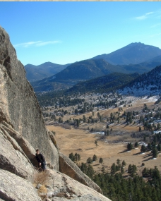

Extreme Climbing Tours
Lumpy Ridge
Located north of Estes Park, Lumpy Ridge is a veritable garden of interesting and challenging routes for climbers of all ages and abilities. Lumpy Ridge is a three-mile-long granite ridge containing over 400 different climbing routes with names ranging from the “Bowels of the Owls” to the “J Crack.” Guides from Cliff Hangers will be happy to lead you and your party to some of the most sought-after climbing routes in the country.
| Difficulty Level | Beginner to expert, depending on climber |
| Time | Half-day and full-day options |
| Physical Distress | Mild to extreme, depending upon climb |